逐秒帧附录 · 玩法架构证据图 0s · 开场 / 菜单
0s · 开场 / 菜单
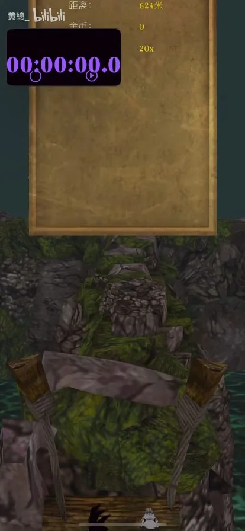
1s · 开场 / 菜单
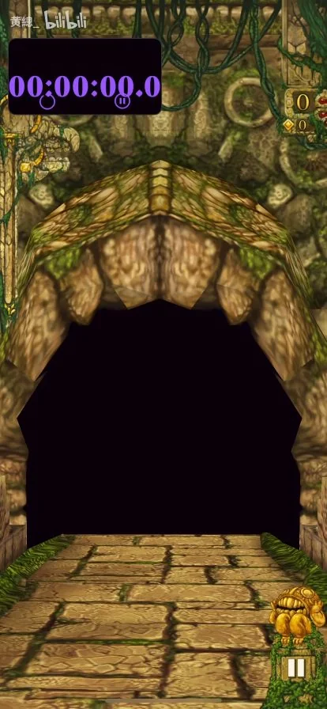
2s · 石桥
兽口神庙入口，石桥从门内伸出。 3s · 石桥
3s · 石桥
镜头从神庙侧后方转到跟随位置；三只恶魔猴。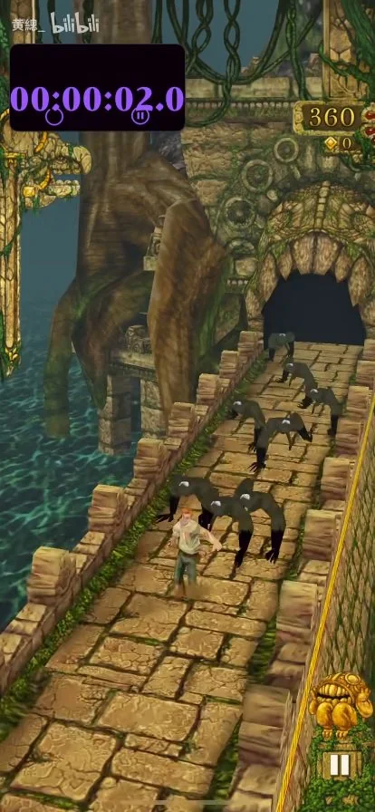
4s · 石桥
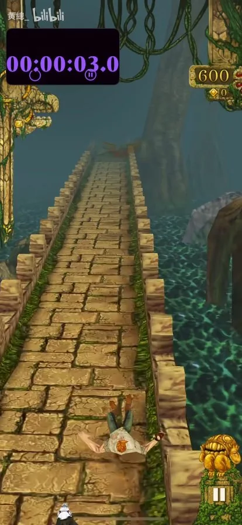
5s · 石桥
 6s · 石桥
6s · 石桥
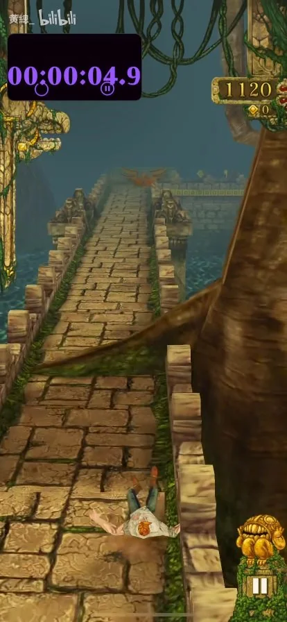
7s · 石桥
 8s · 石桥
8s · 石桥
粗大树根横跨石桥。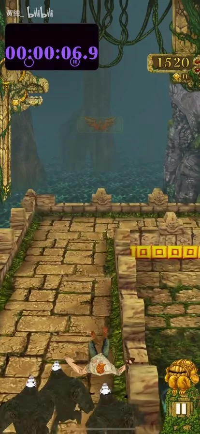
9s · 石桥
直角石台转弯。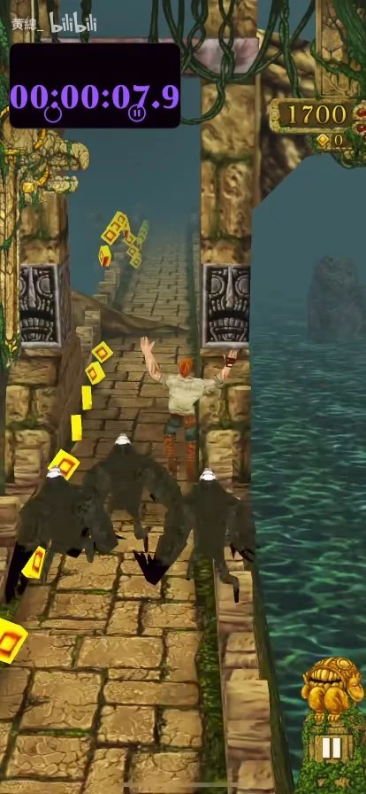
10s · 石桥
穿过浮雕石门，角色跳跃。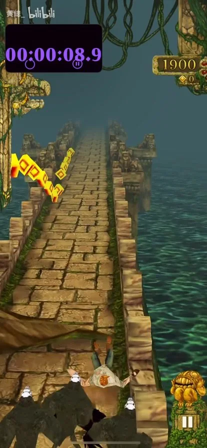
11s · 石桥
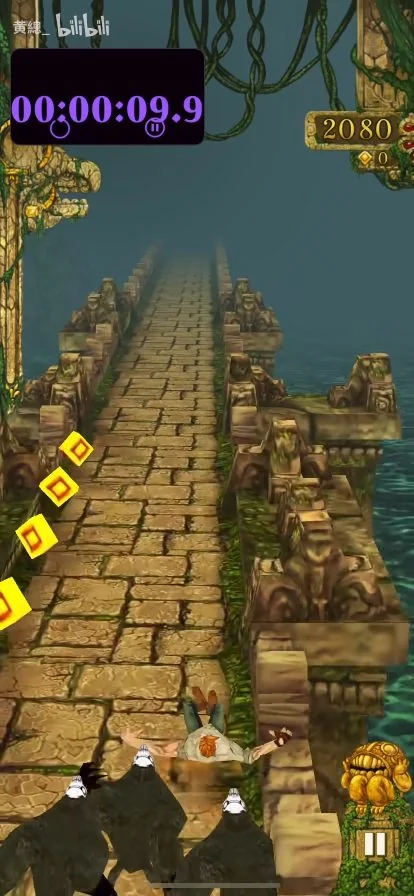
12s · 石桥
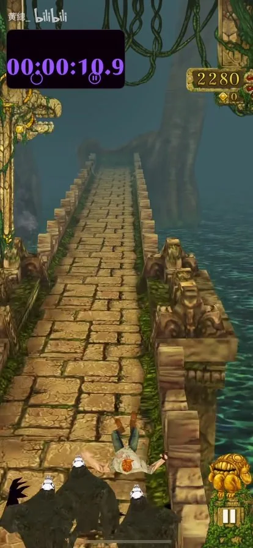
13s · 石桥
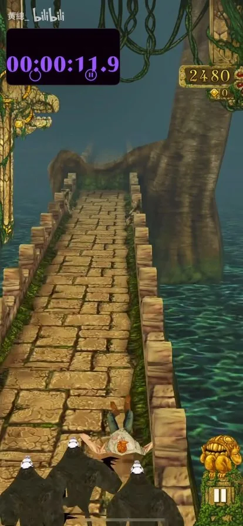
14s · 石桥
 15s · 石桥
15s · 石桥
横向树根，桥外是青绿色水面。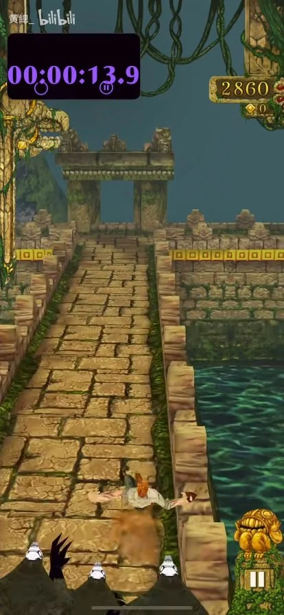
16s · 石桥
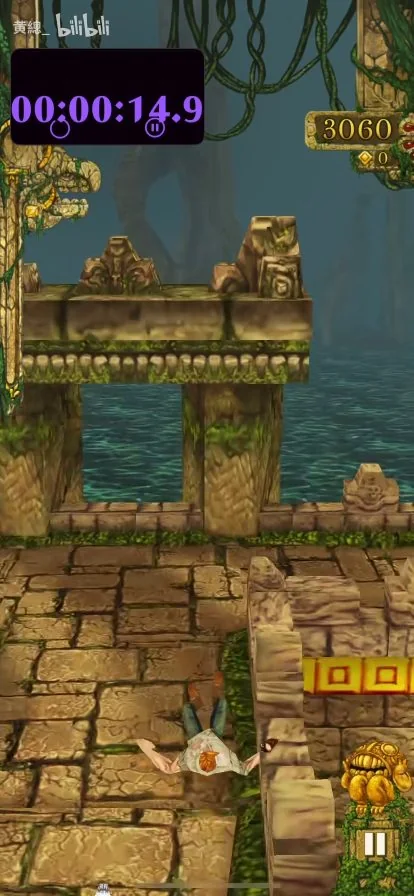
17s · 石桥
直角路口。